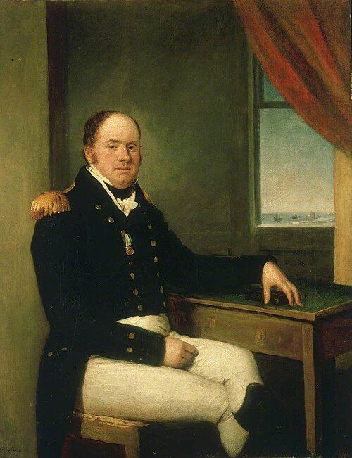
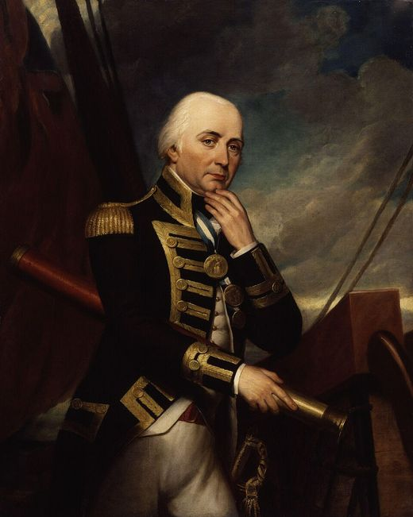
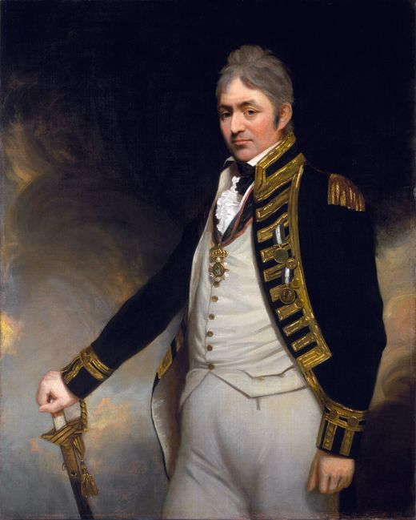
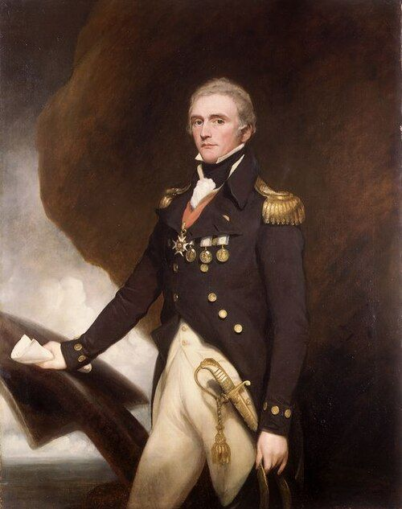
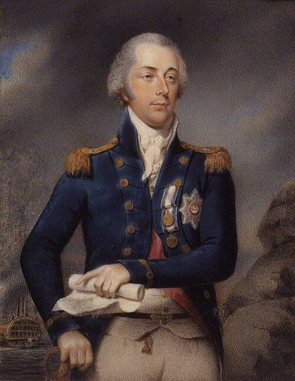
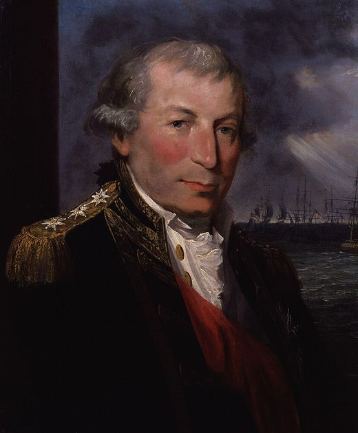
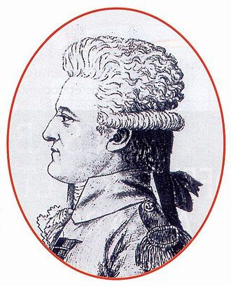
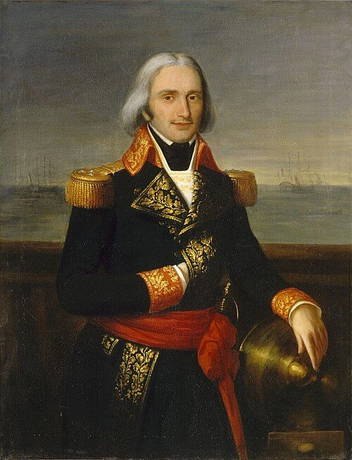
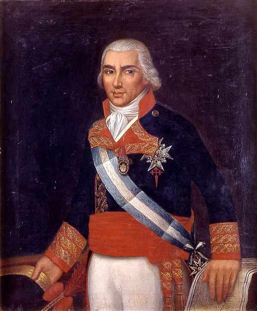

Friends & enemies
Captains & adversaries
Nelson's method depended on other men. He picked captains he trusted, told them everything, and let them act. On the other side were officers as brave as any of them, serving navies that revolution, purges and years in harbour had left unready.
The band of brothers
The phrase was first used of the Nile captains. It stretched to cover the dozen or so men who served with him again and again.
-

Thomas Masterman Hardy
1769–1839 · Flag-captain in six ships
A Dorset man, six feet four, calm, exact and a stern disciplinarian. Nelson stopped a frigate in front of the Spanish fleet to pick him up in 1797 and kept him close ever after. Hardy commanded the brig Mutine at the Nile and was flag-captain from Vanguard to Victory. He was walking beside Nelson when he was shot, and kissed him goodbye. Later First Sea Lord, and Governor of Greenwich Hospital.
-

Cuthbert Collingwood
1748–1810 · Second-in-command at Trafalgar
A reserved Northumbrian ten years older than Nelson and his friend from their lieutenant days in Jamaica; he followed him into three successive ships. He brought Excellent to Nelson's side at St Vincent and led the lee column at Trafalgar in Royal Sovereign. He then commanded the Mediterranean for five years without once going home, and died at sea. He lies beside Nelson in St Paul's.
-

Sir Thomas Troubridge
c. 1758–1807 · Culloden
A London baker's son who was a midshipman with Nelson in the Seahorse in 1773. Jervis thought him the finest officer in the service. He led the line at St Vincent and the landing at Tenerife, and wept with rage when Culloden grounded at the Nile; Nelson insisted he have the medal all the same. At the Admiralty in 1801 he disapproved of Emma Hamilton, and the friendship cooled. Lost with all hands in the Blenheim in a cyclone off Madagascar.
-

Sir Edward Berry
1768–1831 · Flag-captain at the Nile
First man aboard San Nicolás at St Vincent, where he was serving as a volunteer. He caught Nelson as he fell at the Nile, and was then captured carrying home the dispatches. Brave to the point of comedy and not much of a seaman. When Agamemnon joined off Cádiz in 1805 Nelson was delighted: “Here comes that fool Berry! Now we shall have a battle.”
-

Sir James Saumarez
1757–1836 · Orion
A Guernseyman, devout, dignified and senior captain at the Nile, where he was wounded. He was the one member of the band who did not much care for its leader, nor Nelson for him: on the morning after the battle Saumarez began to say that attacking on both sides had risked British ships firing into each other, and Nelson cut him short. He won his own victory off Algeciras in 1801 and later flew his flag in Victory.
-
Thomas Foley
1757–1833 · Goliath and Elephant
A tall Welshman who led the fleet into Aboukir Bay and, on his own judgement, round the head of the French line. It was the single most important decision of the battle and Nelson gave him full credit. He was flag-captain at Copenhagen, the Foley of “I have only one eye”. Ill health kept him from Trafalgar.
-
Sir Alexander Ball
1757–1809 · Alexander
Nelson had once written him off as a coxcomb for wearing epaulettes in France. In the gale of May 1798 Ball took the dismasted Vanguard in tow and refused a direct order to cast off and save himself. “I feel confident of bringing you in safe,” he hailed. They were friends from that day. Ball went on to blockade Malta and govern it, loved by the Maltese.
-
Benjamin Hallowell
1761–1834 · Swiftsure
Born in Boston to a loyalist family, and a giant of a man. He stood on Victory's quarterdeck at St Vincent as a passenger and slapped Jervis on the back. After the Nile he had a coffin made from L'Orient's mainmast and sent it to Nelson with his compliments.
-
Ralph Willett Miller
1762–1799 · Captain and Theseus
A New Yorker by birth and Nelson's captain at St Vincent, Tenerife and the Nile. When Nelson was about to board San Nicolás, Miller started forward; “No, Miller, I must have that honour.” He was killed off Acre in 1799 when shells exploded on his quarterdeck. Nelson raised the subscription for his monument.
-
Thomas Fremantle
1765–1819 · Inconstant, Seahorse, Ganges, Neptune
First to attack the Ça Ira in 1795, in Nelson's boat off Cádiz, shot in the arm the same night as Nelson at Tenerife, opposite Sjælland at Copenhagen, and third in the weather column at Trafalgar. His wife Betsey's diaries are one of the best sources for Nelson off duty.
-
Sir Henry Blackwood
1770–1832 · Euryalus
The frigate captain who watched Cádiz in 1805 and brought the news to Merton that Villeneuve was inside. He witnessed the codicil to Nelson's will on the morning of Trafalgar and was sent back to his ship just before the firing began. “God bless you, Blackwood,” said Nelson. “I shall never speak to you again.”
-
Edward Riou
1762–1801 · Amazon
Famous already for bringing home the wrecked Guardian after she struck an iceberg in 1789. Nelson met him only days before Copenhagen and at once gave him the frigates and a share in planning the attack. He was cut in two obeying the signal Nelson ignored. “The gallant, good Riou,” Nelson called him.
The men above him
-

John Jervis, Earl of St Vincent
1735–1823 · Commander-in-chief, Mediterranean, 1795–99
The hardest disciplinarian in the Navy, who hanged mutineers on a Sunday and made a fleet out of a rabble. He saw what Nelson was at once, forgave him St Vincent, comforted him after Tenerife, and in 1798 gave him the Nile squadron over the heads of two senior admirals, who complained to the Admiralty. They later quarrelled over prize money in the courts.
-
Samuel, Viscount Hood
1724–1816 · Commander-in-chief, Mediterranean, 1793–94
Nelson's first great patron, who took him up at New York in 1782 and gave him Agamemnon in 1793. “The best officer, take him altogether, that England has to boast of,” Nelson thought. Hood's aggression in Corsica was the model for his own.
-
William Locker
1731–1800 · Captain of the Lowestoffe
A pupil of Hawke, lame from a boarding wound, who took a nineteen-year-old lieutenant in hand and taught him to get close. “I have been your scholar,” Nelson wrote to him after the Nile. “It is you who taught me to board a Frenchman.” Locker commissioned the first portrait of him.
-
Sir Hyde Parker
1739–1807 · Commander-in-chief, Baltic, 1801
Rich from West Indian prize money, comfortable and slow. He let Nelson plan and fight Copenhagen, then made the signal to break off. He was recalled within weeks and never employed again.
The adversaries
The French officer corps had been gutted by the Revolution; the Spanish navy was starved of money and seamen; the Danes fought from hulks. Courage was not what they lacked.
-

Pierre-Charles Villeneuve
1763–1806 · Commander of the Combined Fleet, 1805
A Provençal nobleman who stayed in the navy when most of his class fled. He commanded the rear at the Nile and got away with two ships, for which he was called lucky by Napoleon and worse by others. He understood exactly how Nelson would attack at Trafalgar, told his captains so, and could find no answer. Taken in Bucentaure, paroled in Hampshire, he was found in an inn at Rennes in April 1806 with several knife wounds in his chest. The verdict was suicide.
-

François-Paul Brueys d'Aigalliers
1753–1798 · Commander at the Nile
He had carried Bonaparte's army safely to Egypt past Nelson's whole squadron, and then anchored in Aboukir Bay against the advice of several of his officers, short of men, food and water. Wounded twice in the first hour and then almost cut in half, he had himself propped on an arms chest on his quarterdeck and died there before his flagship burned.
-

Federico Gravina
1756–1806 · Commander of the Spanish squadron at Trafalgar
Born in Palermo and the best Spanish admiral of his day. In 1793 he had fought beside Hood and Nelson at Toulon as an ally. He argued in council against leaving Cádiz, was overruled, and fought his flagship against three opponents until his left arm was shattered. He brought eleven ships home and died of the wound the following March.
-
Cosme Damián de Churruca
1761–1805 · San Juan Nepomuceno
A Basque astronomer and chart-maker of European reputation, and a captain who drilled his crew hard. He wrote to a friend before sailing that if he heard the ship had been taken, he could be sure her captain was dead. At Trafalgar he fought six British ships. A ball took off his right leg; he had the stump set in a barrel of flour and went on giving orders until he bled to death.
-
Jean-Jacques Lucas
1764–1819 · Redoutable
A very small man, barely five feet tall, and the most effective French captain at Trafalgar. Knowing his gunners could not match the British, he had drilled his men for months in musketry, grenade-throwing and boarding. They cleared Victory's upper deck, killed Nelson, and were about to board when Téméraire's broadside hit them. He struck with five-sixths of his crew dead or wounded. Napoleon gave him the gold cross of the Legion of Honour.
-
Pierre Dumanoir le Pelley
1770–1829 · Commander of the allied van at Trafalgar
For two hours his ten ships sailed away from the battle while Villeneuve signalled for them. He turned at last with four, passed down the line at long range, and left. A British squadron caught him a fortnight later. A French court of inquiry cleared him; French opinion did not.
-
José de Córdoba y Ramos
1732–1815 · Commander at Cape St Vincent
Given a fleet of splendid ships and almost no trained seamen, he let it fall into two bodies in front of Jervis. He was tried, stripped of his rank and forbidden to appear at court.
-
Olfert Fischer
1747–1829 · Commander of the Danish line at Copenhagen
He shifted his flag twice under fire, was wounded in the head, and reported afterwards that the British had been superior in force and all but beaten. Nelson, furious, wrote a point-by-point rebuttal to the Crown Prince's adjutant. In Denmark the battle is remembered as an honourable defence.
-
Antonio Gutiérrez de Otero
1729–1799 · Governor of the Canary Islands
The only commander ever to beat Nelson outright. At sixty-eight, with a few regulars and the island militia, he repulsed the landing at Santa Cruz, then treated his defeated enemy with a generosity Nelson never forgot: boats to take them off, his own hospital for their wounded, bread and wine for every man.
-
Louis-René de Latouche-Tréville
1745–1804 · Boulogne, then Toulon
The ablest admiral France had left. He beat off Nelson's boats at Boulogne in 1801 and was chosen by Napoleon to command the invasion campaign. He died at Toulon in August 1804, worn out, and the command passed to Villeneuve. It is one of the larger might-have-beens of the war.